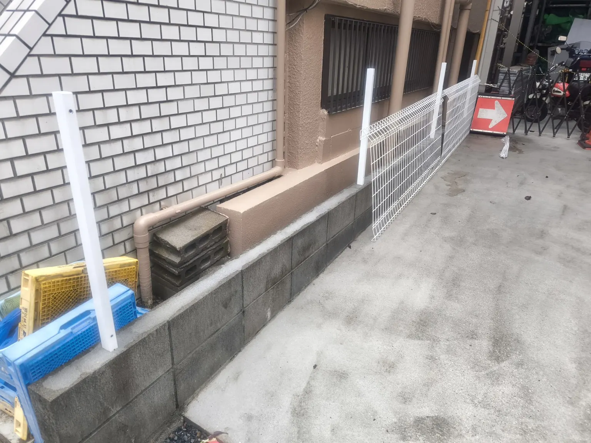
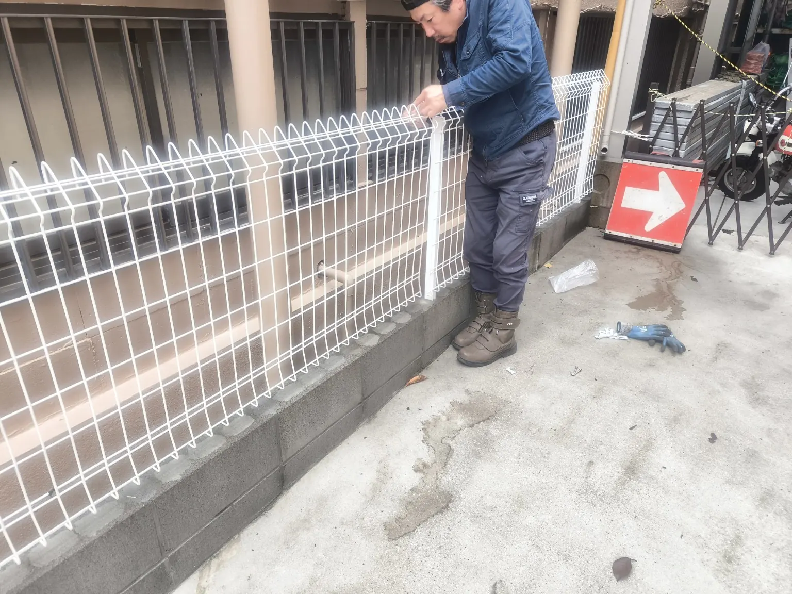

WORKS / FENCE RESTORATION
既存メッシュフェンス一時撤去・復旧工事
隣接建物への足場設置に伴い、一時撤去されていた既存メッシュフェンスを復旧しました。新設ではなく、既存設備を元に戻す工事です。
同様の工事を相談する
工事の概要
隣接建物で足場を設置するため、一時撤去していた既存メッシュフェンスの復旧作業を行いました。太刀川組が施工したのはフェンスの復旧であり、隣接建物の足場工事ではありません。
実際の施工写真

PHOTO 01
復旧途中
支柱とメッシュパネルを元の位置に戻す途中の様子です。

PHOTO 02
取付作業
既存フェンスのパネルを取り付けている現場の様子です。
PHOTO 03
復旧後
一時撤去していたフェンスを復旧した状態です。
フェンスの撤去・復旧のご相談
既存設備の一時撤去や復旧など、現場条件に応じてご相談を承ります。
工事について問い合わせる